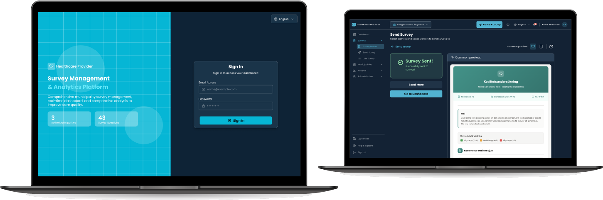
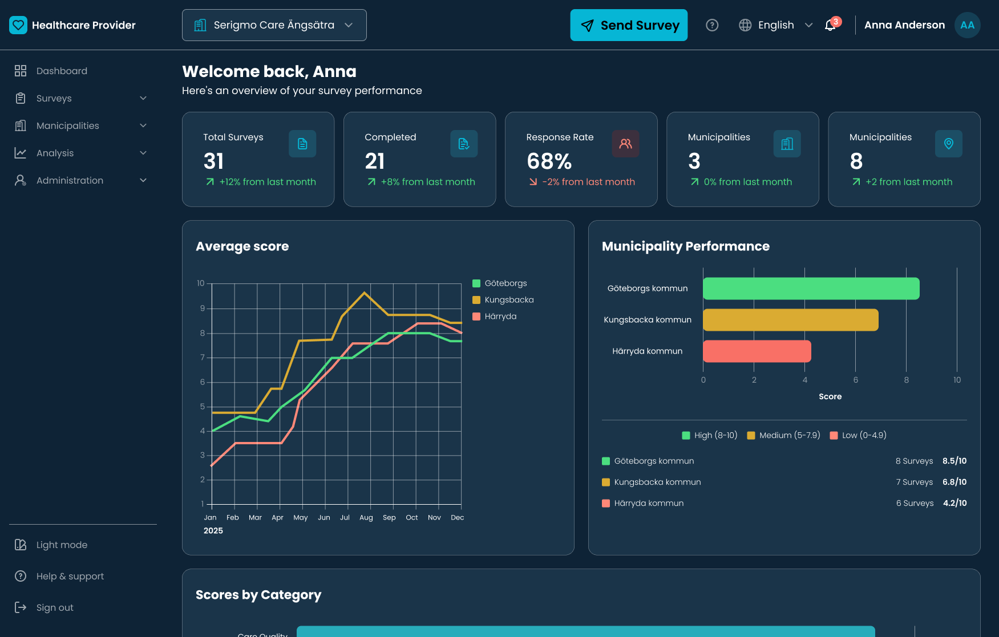
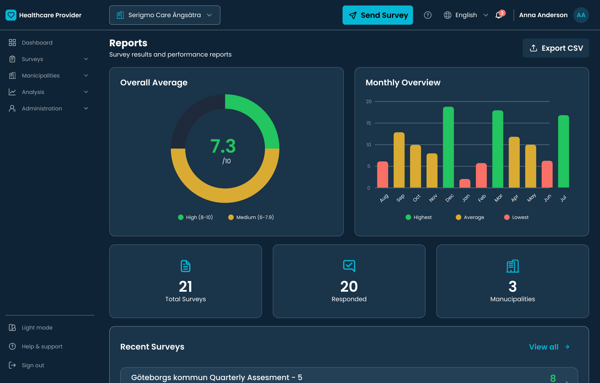

Replacing emails and spreadsheets with one platform for healthcare quality surveys
The problem
Administrators sent healthcare quality surveys to social workers across many municipalities, using Outlook, Excel and shared folders. Nobody could see who had answered, and reports took weeks.
What I did
Interviewed 4 quality managers, mapped the whole survey workflow, designed the information architecture and the platform, and tested it with 5 administrators. I also built 100% of the front-end myself with Cursor.
Key decisions
Result
to send a survey, in testing
A production-ready, WCAG-compliant platform in under eight weeks. In testing, creating and sending a survey went from about 2 hours to about 15 minutes. The platform has launched with two customers and is used in several Swedish municipalities.
In Sweden, healthcare quality surveys, for example for HVB and LSS services, go to social workers across many municipalities. Administrators created, sent, chased and reported on them in Outlook, Excel and shared folders: emails by hand, a spreadsheet per municipality, missed deadlines, no overview of who had answered, and quarterly reports that took up to two weeks.
The platform started as an idea from my manager at Focalpay and became its own B2B SaaS product. Our goal was to cut administrators' workload by an estimated 40%, without lowering data quality.
The one question
So every decision had to answer one question:
can a busy administrator send a survey without missing anyone?
My role
I wanted to understand how administrators actually work, not how the process looks on paper. I combined interviews with 4 quality managers, workflow mapping, a document review and observation. Four findings shaped the work:
4
administrative levels: providers, municipalities, districts and social workers
8–10h
per week spent on manual tracking
2 wks
to prepare a single quarterly report
Hours and weeks from interviews with 4 quality managers.
Persona
In a workshop, we grouped ideas into four themes and prioritised them as Must, Should and Could: building the survey, sending it out, keeping track and reading the results. That became the platform's three main sections: Surveys, Analysis and Reports.

Workshop: grouping ideas and prioritising them as Must, Should and Could.
User journey
The high points were the guided steps with clear feedback. The low points were choosing recipients by hand and waiting for answers without knowing who had replied.

The front-end team was busy with another project
Build the front-end myself, with their reviews
The front-end team was fully booked on another project. Without someone free to build it, the designs would have stayed in Figma.
So I built the whole front-end myself with Cursor, while the back-end team built the server side, setting and checking every spacing value, colour, state and interaction against exact tokens and accessibility requirements.
The front-end team reviewed my code at every phase, and their feedback taught me a lot. Whenever testing found an issue, a bug came up, or users' feedback called for a change, I made it myself, without waiting for a handoff.
Decision 1 · Sending a survey in six checked steps
Missing just one municipality could ruin a whole reporting round. So I split sending into six steps, each checked before the next one opens.
Pick the template to send.
Find and select municipalities in the hierarchy.
Choose the language for each municipality or region.
Choose the answer deadline for each group.
Check all the details before sending.
Send to all chosen recipients at once.


Decision 2 · A hierarchy that opens one level at a time
Showing every administrative level at once created long, impenetrable lists. So the platform shows one level at a time.
| Level | Description | Design solution |
|---|---|---|
| Provider | Top-level healthcare organisation | Always visible in the sidebar, which can be collapsed |
| Municipality | Many per provider | Opens with one tap to show its districts |
| District | Sub-units within each municipality | Opens inside the municipality, one level at a time |
| Social Worker | Individual survey respondents | Only shown when a district is selected |
In testing, most participants missed the Select All button: it had low contrast and sat in the wrong place, so they selected districts one by one. I moved it, made it stand out and added a counter. All 5 participants found it straight away.
Decision 3 · Traffic-light colours instead of number tables
Managers needed to see quickly how each municipality was doing, and big number tables are tiring under time pressure. So I designed a three-colour scoring system that shows status at a glance.
| Status | Meaning | Action |
|---|---|---|
| Good performance | Above target on all key indicators. | No action needed. |
| Needs attention | Close to the limit, with a risk of falling below target. | Keep an eye on it and plan a follow-up. |
| Critical | Below the acceptable level. | Needs action now. |


5 administrators who work with surveys regularly did the same task the old way and then in the prototype.
2h → 15 min
to create and send a survey
8 → 5 min
to select all districts
2 wks → live
quarterly reports (estimated by administrators)
< 8 wks
from start to production
The platform has launched with two customers and is used in several Swedish municipalities. The 40% workload target can only be confirmed with real usage over time, so that's what we'll measure next.
"Now I can actually see what I've selected. Before I was never sure if I'd got everyone."
— Healthcare administrator, usability testing